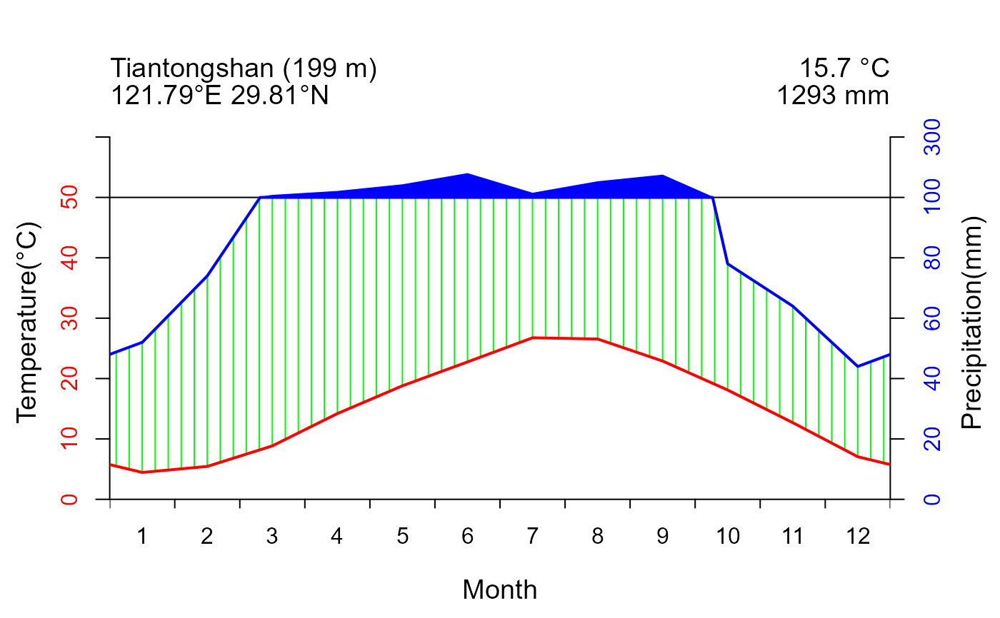
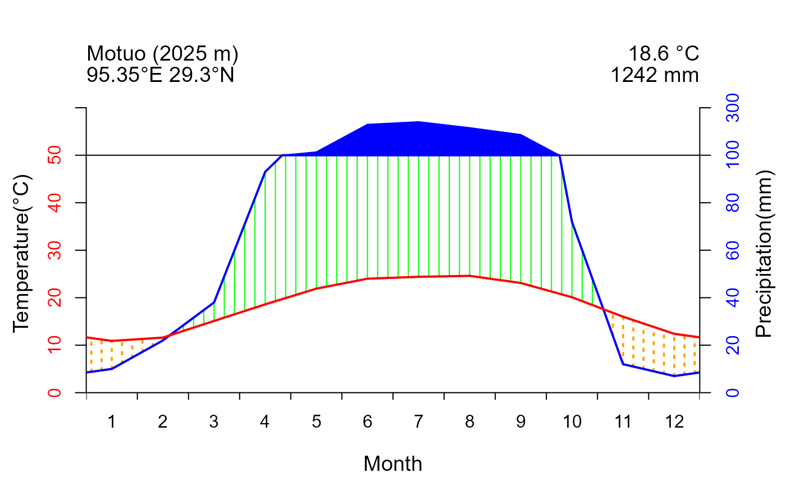
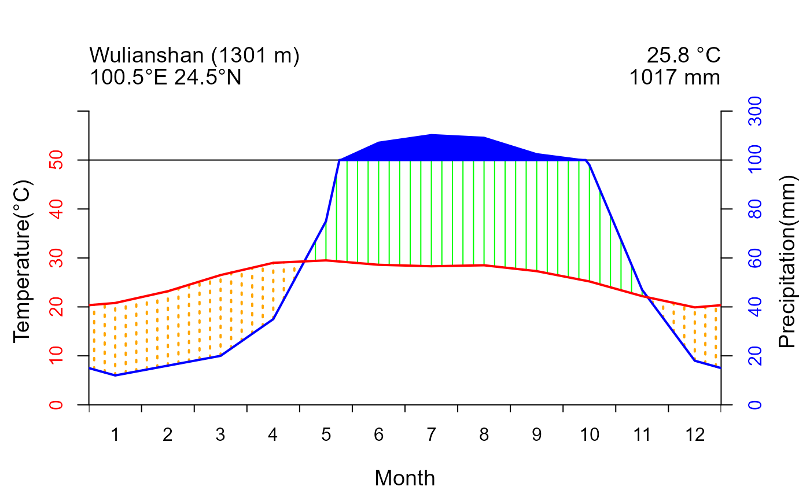
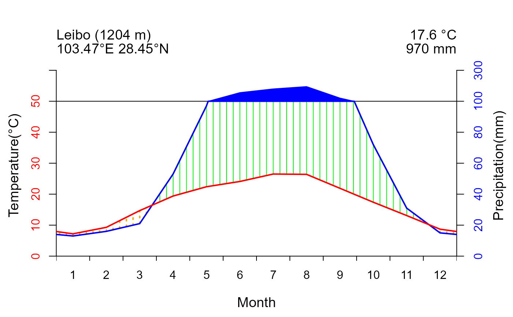
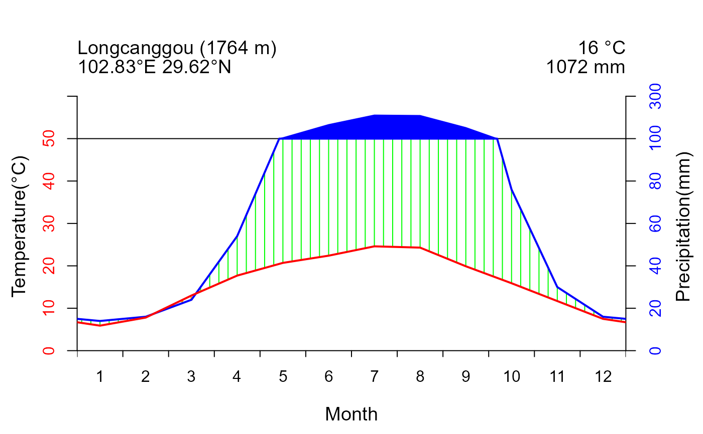

clim_plot plots the Walter & Lieth climatic diagram
with the climate data of different locations. It is based on the method of function
diagwl()from package climatol,
but offers additional parameters for color selection, axis labeling,
and location information display to meet diverse research and publishing needs.
Usage
clim_plot(data,mlab="",pcol="blue",tcol="red",wcol="green",dcol="orange",
pfcol="#79e6e8",sfcol="#09a0d1",ylabel=FALSE,ylab1=NA,ylab2=NA,xlab="Month",
ShowFrost=FALSE,shem=FALSE,p3line=FALSE,p50line=FALSE,extremeT=FALSE,
margen=c(4,4,5,4),per=NA)Arguments
- data
A data.frame(see details in the dataset
plotdata) with the following 18 columns:No: Serial number of the locations.location: Abbreviation of the locations.lon: Longitude of the locations in decimal digit (negative numbers indicating west longitude).lat: Latitude of the locations in decimal digit (negative numbers indicating south latitude).altitude: Altitude of the locations.type: The labels of climate data, encompassing annual average precipitation, annual average minimum temperature and annual average maximum temperature. In the event that Frost=True, it will also incorporate annual extreme minimum temperature.1-12: The column names of the particular climate data type correspond to monthly values ranging from January to December.
Other columns containing information may be placed after the aforementioned columns, but will be disregarded in subsequent processes.
- mlab
A vector of 12 monthly labels for the X axis.Deafult is numeric. Alternatively, set as 'en' or 'es' can be specified to display the month names in English or Spanish respectively. (original parameter of the referenced function
diagwl()).- pcol
Color of the precipitation curve. Default is "blue".
- tcol
Color of the temperature curve. Default is "red".
- wcol
Color of the humid season polygon. Default is "green".
- dcol
Color of the arid season polygon. Default is "orange".
- pfcol
Color of the potential frosty months. Default is "#79e6e8". No use when ShowFrost= FALSE.
- sfcol
Color of the confirmed frosty months. Default is "#09a0d1". No use when ShowFrost= FALSE.
- ylabel
A logical value for whether using customized label of y axis. Default is FALSE.
- ylab1
A character value for label of y axis of temperature. Default is NA.
- ylab2
A character value for label of y axis of precipitation. Default is NA.
- xlab
A character value for label of x axis. Default is "Month".
- ShowFrost
A logical value for whether marking forst months. Default is FALSE.
- shem
A logical value for whether keeping the summer period in the central zone of the graphic (the diagram will begin the plot with the July data). Default is FALSE. Useful when the location is in southern hemisphere (original parameter of the referenced function
diagwl()).- p3line
A logical value for whether displaying a supplementary precipitation line referenced to three times the temperature. Default is FALSE (original parameter of the referenced function
diagwl()).- p50line
A logical value for whether displaying a supplementary precipitation line in 50°C-100mm. Default is FALSE.
- extremeT
A logical value for whether displaying the extreme temperature. Default is FALSE.
- margen
A vector to control the range of plot. Default is "c(4,4,5,4)"
- per
a parameter from the referenced function
diagwl(). No use temporarily.#'@details The function extracts precipitation and temperature from arranged Worldclim Historical monthly weather data(https://worldclim.org/data/monthlywth.html) and arranges them to a data.frame for drawing the climatic diagram.
Value
A Walter & Lieth climatic diagram of the provided locations, including annual variation of temperature and precipitation , as well as the time of humid and arid season.
Examples
{
data("plotdata")
test <- subset(plotdata,No==10)
clim_plot(data=test,ylabel = TRUE,
ylab1="Temperature(\U{00B0}C)",
ylab2="Precipitation(mm)",
p50line = TRUE)
#use loop to plot multiple diagrams simultaneously
list <- unique(plotdata$No)
par(mfrow=c(1,1))
for (i in 1:5){
k <- list[i]
sub <- subset(plotdata,No==k)
clim_plot(data=sub,ylabel = TRUE,
ylab1="Temperature(\U{00B0}C)",
ylab2="Precipitation(mm)",
p50line = TRUE)
}
}




